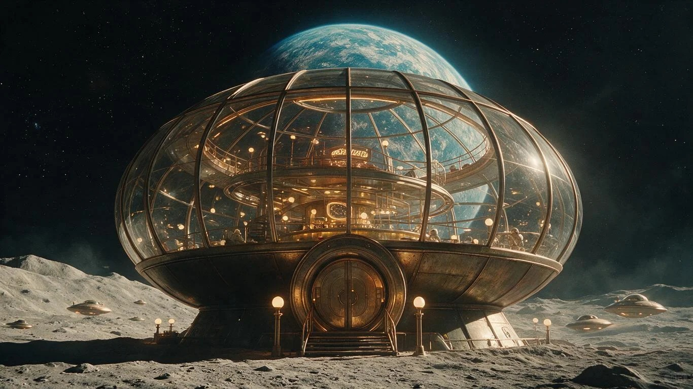
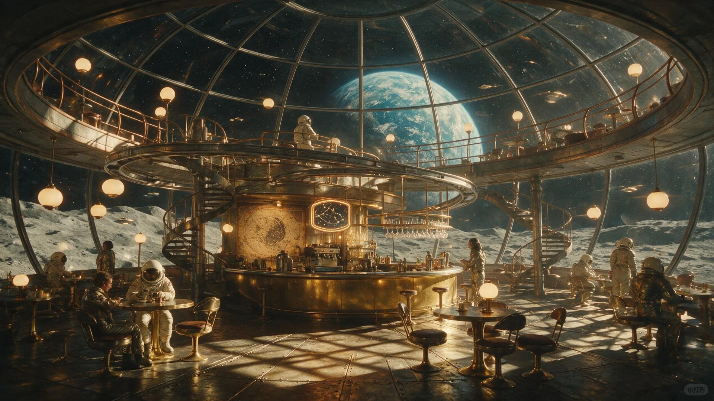
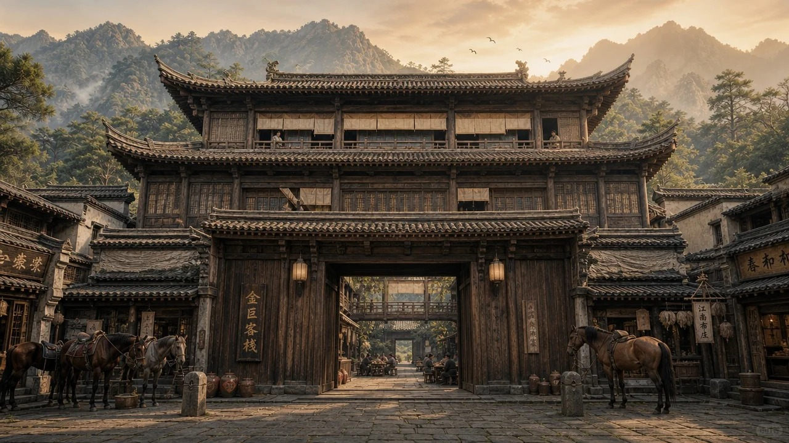
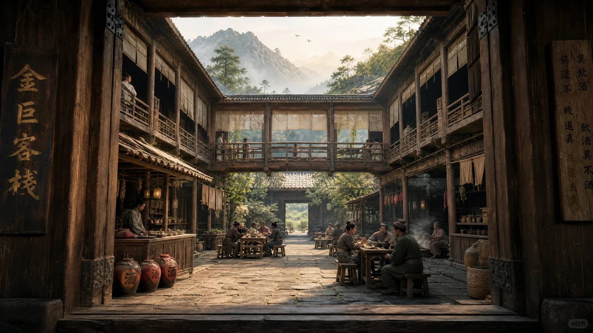
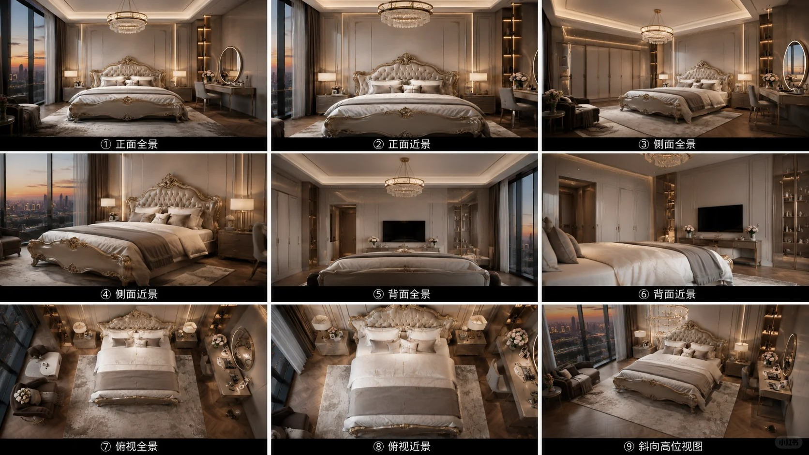

01 / FORMULA
单场景提示词公式
地点状态 + 空间层次 + 镜头构图 + 时间光线 + 色彩关系 + 材质细节 + 情绪氛围 + 视觉标准 + 排除项。




02 / SINGLE SCENE
单场景主图
一张主图先把地点、空间、光线和氛围说清楚。
单场景通用 Prompt
生成一个【场景地点与类型】的纯环境画面，时间为【时间段】，天气为【天气状态】，场景呈现【核心状态或叙事情境】。 前景是【前景元素与材质】，中景是【主要空间、道路、建筑或自然环境】，背景是【远景元素】，形成明确的前中后景和【开阔 / 封闭 / 纵深 / 一点透视】。 镜头采用【景别】，摄影机位于【机位与高度】，使用【焦段】，从【方向】观察。以【主体空间】为视觉中心，通过【道路 / 墙体 / 建筑 / 河流】形成引导线，使用【中心 / 非对称 / 对角线 / 留白】构图，画面比例【16:9】。 光线来自【方向】，属于【清晨 / 正午 / 傍晚 / 阴天】，阴影【长度与软硬】。主色为【主色】，辅色为【辅色】，保持色彩干净统一。材质符合真实物理规律，整体像【汽车广告 / 电影空镜 / 高端建筑摄影】，4K，高动态范围，不过度锐化。 不要人物、车辆、文字、Logo、水印、乱码广告牌、建筑变形、重复物体、过度雾气、脏污滤镜或夸张霓虹色。
03 / CONSISTENCY
场景一致性多视角
核心规则是“仅允许摄影机移动”，所有空间与材质设计保持不变。

场景一致性九宫格 Prompt
【参考场景锁定模式】 完全相同的建筑设计、结构、比例、场地规划、空间布局、景观、道路、背景环境、材质、色彩、光照方向、阴影、天气和时间段。建筑锁定、环境锁定、材质锁定、灯光锁定。禁止重新设计、增加或删除建筑，仅允许摄影机移动。 【九宫格摄影机矩阵】 第一行：正面全景 / 正面近景 / 侧面全景 第二行：侧面近景 / 背面全景 / 背面近景 第三行：俯视全景 / 俯视近景 / 45° 斜向高位总览 【摄影机参数】 统一 50mm 焦段、曝光、白平衡、动态范围、景深、色彩风格、构图逻辑与画面比例。 【画面质量】 建筑摄影、ArchViz Presentation Board、商业广告级视觉、电影级环境设计、8K HDR、PBR 材质、统一渲染质量。 【建筑主体】 填写你的建筑与环境描述。
04 / CHECK
判断它是不是同一个场景
- 建筑数量、比例、开口与装饰没有改变。
- 道路、景观、远山和背景元素位置一致。
- 时间、天气、光照和材质没有随机漂移。
- 不同机位之间存在正确透视与空间逻辑，而不是九张相似的新设计。